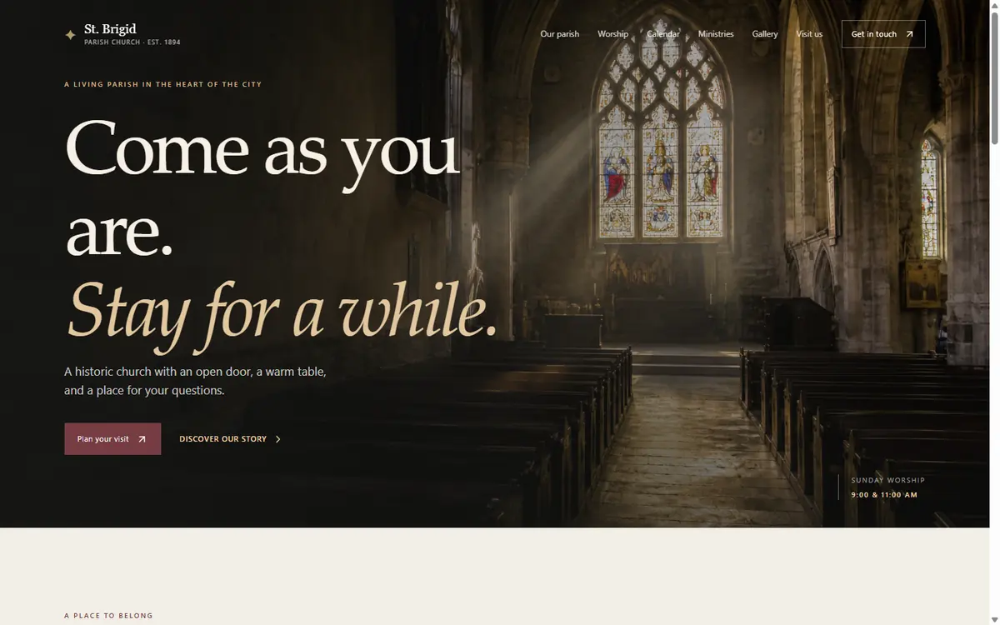
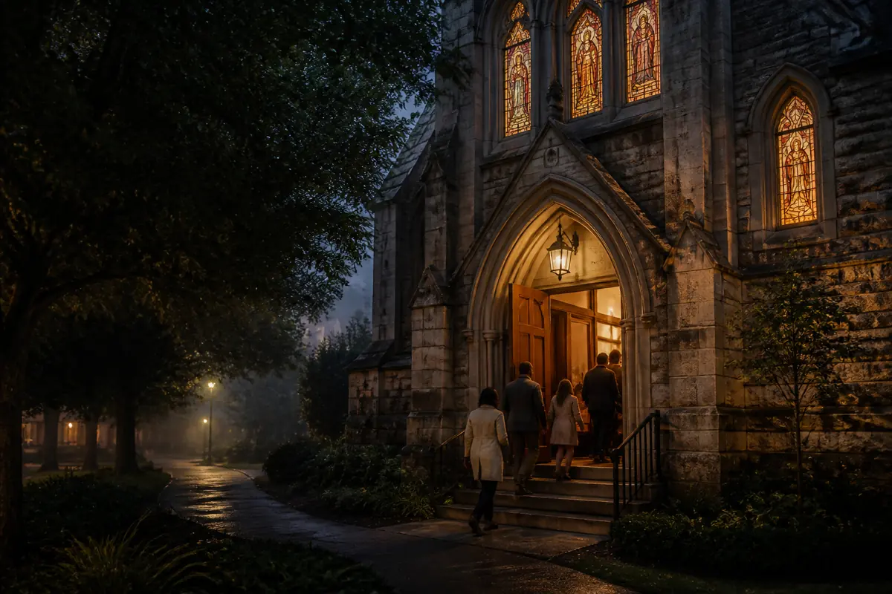
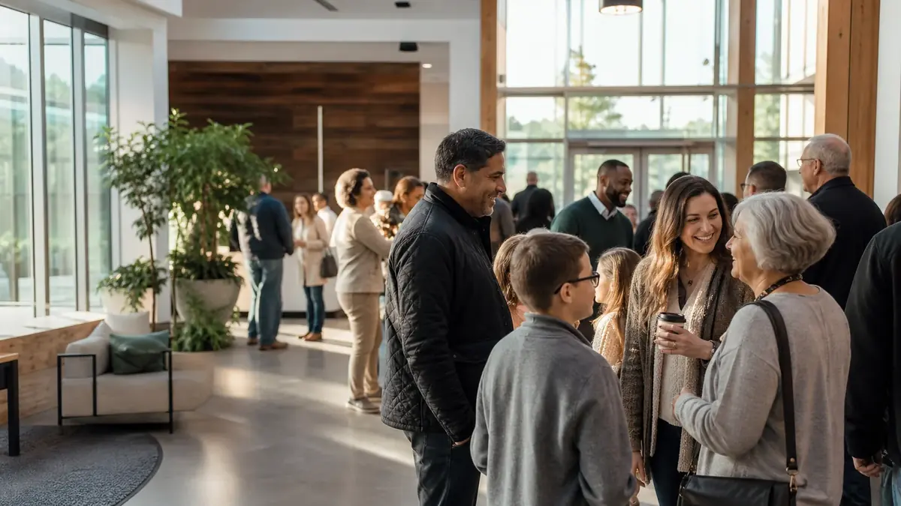

Project vault
Three fresh builds, still warm from the compiler.
A little archive of recent sites: polished church experiences, animated pages, and enough responsive layout wrangling to earn a tiny trophy.

React and motion
St. Brigid Parish
A historic parish site with cinematic page transitions, candlelit warmth, and layout discipline that actually behaves on mobile. Very polite, very coded.
React
Vite
Motion
GSAP
Open full website

GSAP energy
Ecclesia Church
A bold church concept with bento sections, moving imagery, and enough smooth scroll flavor to make the page feel like it knows where it is going.
React
GSAP
Bento layout
Open full website

Static site craft
Grace Harbor Church
A full church site with events, sermons, forms, structured data, and accessibility details. Basically the responsible adult of the trio.
HTML
CSS
JavaScript
Responsive
Open full website